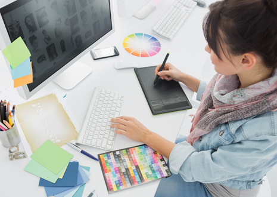

studio creativ
|
O companie care doreste sa aiba vizibilitate,
trebuie in primul rand sa aiba o imagine bine
definita si apoi sa i se realizeze o campanie
publicitara cat mai originala, prin care sa
scoata in evidenta intreg potentialul valoric al
produselor si serviciilor cu care acea companie
se identifica. Pentru toate acestea este necesar un mix de marketing si experienta in furnizarea de servicii specifice (design publicitar, grafica, promovare, print), pentru a avea garantia ca materialele publicitare vor deveni usor de recunoscut si vor aduce un plus de imagine si profit. Fiecare produs publicitar ar trebui sa reflecte atat identitatea vizuala a companiilor cat si potentialul maxim al produselor, de aceea materialele grafice trebuie sa fie realizate exceptional, aducand cu ele aprecierea clientilor si partenerilor de afaceri. Echipa Media Serv are designeri experimentati (avand studii aprofundate de grafica/design) ce pot realiza in conditii deosebite orice fel de material publicitar. |
 |
Copyright © 2016 Lupa.com. All rights reserved.